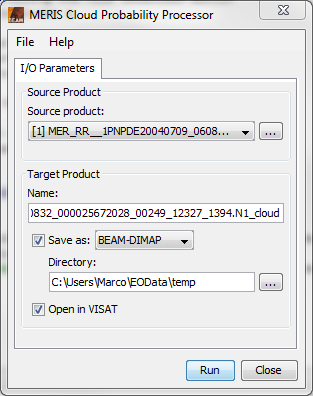

| MERIS Cloud Probability- Processor Description | |

Name: Used to select the spectral source product. The source product shall contain spectral bands providing a source spectrum at each pixel. Use the ... button to open a data product currently not opened in the Sentinel-3 Toolbox.
Name: Used to specify the name of the target product.
Save to: Used to specify whether the target product should be saved to the file system. The combo box presents a list of file formats. If ENVISAT is selected the source product must be in ENVISAT format too.
Open in ESA S3-Toolbox: Used to specify whether the target product should be opened in the Sentinel-3 Toolbox. When the target product is not saved, it is opened in the Sentinel-3 Toolbox automatically.
The algorithm uses two different neural nets. The first for usage over land and the second for usage over the open ocean. By default every pixel with an altitude below -50m is treated as ocean.
This selection can be edited in the config files, which together with the neural nets are unpacked
into a subdirectory of the user directory. The subdirectory used is
.snap/snap-meris-cloud/auxdata
The file cloud_config.txt specifies which configuration for the land and the ocean case are used.
In the respective configuration files following properties are of interest:
neural_net specifies the filename of the neural net to use.validExpression gives a boolean expression,
which is used to select between the land and the ocean net.true the land net is used.
As a second option the expression for the ocean net is evaluated.
If neither of the two expressions evaluate to true, the no-data value is set.